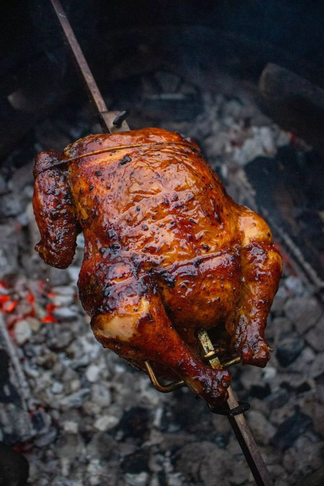

The story behind Egerton and Nakuru’s home of Swahili flavour.

Swahili Foods Eger began with a simple idea: give Egerton and Nakuru the kind of food that tastes like home on the Kenyan coast. What started with pilau and grilled chicken grew into a menu loved by students, families and workers.
Today we serve shawarma, chips, pilau, flame-grilled chicken, Friday biryani and mshikaki, all made fresh with the same care as day one.
Spiced rice slow-cooked with whole spices, served by the plate or Sinia platter.
Paja, kifua, half or full chicken, flame-grilled and juicy.
Aromatic layered biryani, made fresh on Fridays only.
Loaded wraps and crispy chips, plain, spicy or masala.
Every dish follows the same careful path.
Chicken, rice, vegetables and spices sourced fresh for daily cooking.
Garlic, lemon and spices given proper time to flavour every cut.
Grilled, fried or simmered fresh, never left sitting.
Packed carefully for pickup or delivery around Egerton and Nakuru.
To serve authentic, affordable Swahili food that brings people together across Egerton and Nakuru.
Fresh ingredients bought daily, hygienic preparation, proper marinating time and food served hot. Every dish is cooked to order or freshly batched.
If something isn’t right, tell us on WhatsApp and we’ll make it right. Your trust matters more than any single sale.
We deliver within Egerton and Nakuru. Delivery has an additional fee which the owner confirms with you based on your location. Pickup is also available.
Biryani is cooked in careful, fresh batches every Friday, so it is only available to order that day.
Payment is arranged directly with the restaurant owner after your order is acknowledged on WhatsApp.
Sending the WhatsApp message is a request. Your order is confirmed once the restaurant acknowledges it.
We are open Tuesday to Sunday, 8AM to 10PM, and closed every Monday.
| Tuesday – Sunday | 8:00 AM – 10:00 PM |
| Monday | CLOSED |